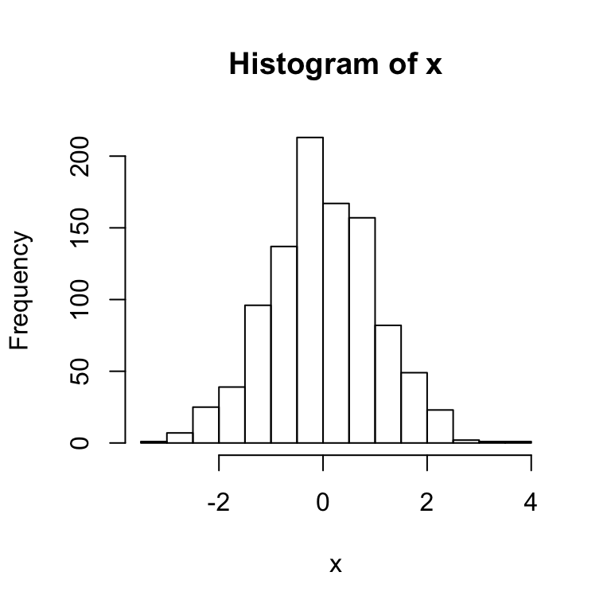

This page gives a quick introduction to “base” R.
Launch R Studio and take stock – find the Console, the Environment/History, and the Files/Plots/Packages/Help. This is also a good time to set some preferences – I like to turn off saving the workspace and history, and also turn on a lot of the R code diagnostics.
Create a new R script using File > New File > R Script. Write a short comment section describing what this is, and follow along with the code below!
##################################################################
# June 2, 2017
# Jeff Goldsmith
#
# Script for exploring R!
##################################################################You can do basic computations in R, either on the command line (in the console) or by writing things in the script and executing the code in the console. Note that you can execute commands (e.g. the line with the cursor or highlighted code) in the console from a script using Command+Enter (Mac) or Ctrl+Enter (Windows).
2 + 3
## [1] 5
(18/3 + 1*2) ^ (4 - 2) - 6.18273
## [1] 57.81727Before long, you’ll do all your arithmetic in R!
Computation is great, but you need to be able to assign objects to names.
x = (18/3 + 1*2) ^ (4 - 2) - 6.18273
y = c(1, 3, 6, 9)In the preceding, R was “silent” – that is, nothing was printed to the console. When making assignments, R assumes you don’t want to see the result of that assignment. If you want to see the result of an assignment, you’ll have to ask for it.
x = c(1, 3, 6, 9)
x
## [1] 1 3 6 9Note, in the preceding, that we overwrote the previous assignment to x.
R can handle several data types in addition to numbers, as illustrated in the vectors below.
vec1 = 5:8
vec2 = c("My", "name", "is", "Jeff")
vec3 = c(TRUE, TRUE, TRUE, FALSE)
vec4 = factor(c("male", "male", "female", "female"))
class(vec1)
## [1] "integer"
class(vec2)
## [1] "character"
class(vec3)
## [1] "logical"
class(vec4)
## [1] "factor"Of these, factors are the least intuitive. They can be very useful, but they can also do things you don’t expect. This is especially bad when you have factors but think you have characters – which happens more than you’d expect, because R uses factors a lot (mostly for historical reasons). Folks get pretty riled up about factors.
Factors are the way to store categorical variables in R. They can take on specific levels (e.g. male and female) which are usually presented as characters but are, in fact, stored by R as integers. These integer values are used by functions throughout R – in making plots, in organizing tables, in determining the “reference” category – but most of the time are hidden by easier-to-read character strings.
This is the kind of thing that can get you in trouble.
vec4
## [1] male male female female
## Levels: female male
as.numeric(vec4)
## [1] 2 2 1 1
vec4 = relevel(vec4, ref = "male")
vec4
## [1] male male female female
## Levels: male female
as.numeric(vec4)
## [1] 1 1 2 2Vectors can be comprised of any single data type (i.e. logical or numeric), as can matrices. In the following we’ll create a first matrix; if you’re not sure how a function (like matrix()) works, use ?matrix.
mat1 = matrix(1:8, nrow = 2, ncol = 4)
mat1
## [,1] [,2] [,3] [,4]
## [1,] 1 3 5 7
## [2,] 2 4 6 8We can also create matrices by binding rows or columns, as long as those have the right dimensions.
mat2 = rbind(c(7,9,11,13), mat1)
mat2
## [,1] [,2] [,3] [,4]
## [1,] 7 9 11 13
## [2,] 1 3 5 7
## [3,] 2 4 6 8Again, every entry in a matrix has to be the same type; R will coerce variables if it has to.
mat3 = cbind(vec1, vec2)
mat3
## vec1 vec2
## [1,] "5" "My"
## [2,] "6" "name"
## [3,] "7" "is"
## [4,] "8" "Jeff"You can access the entries in a vector or matrix using the appropriate indices – entries in a vector are indexed by one number, and entries in a matrix by two numbers.
vec1[1]
## [1] 5
mat1[2,4]
## [1] 8You can access multiple entries if you need to.
vec1[2:3]
## [1] 6 7
mat1[1, ]
## [1] 1 3 5 7You can subset using TRUE and FALSE in place of indices, which gives rise to a common approach to filtering vectors.
vec1[c(TRUE, FALSE, TRUE, FALSE)]
## [1] 5 7
vec1[vec1 > 2]
## [1] 5 6 7 8
which(vec1 > 2)
## [1] 1 2 3 4You can overwrite specific entries using subsets.
vec1[2:3] = c(14, 15)
vec1
## [1] 5 14 15 8
mat1[1,1] = 12; mat1[2,] = 1:4
mat1
## [,1] [,2] [,3] [,4]
## [1,] 12 3 5 7
## [2,] 1 2 3 4
vec4[1] = "Male"
## Warning in `[<-.factor`(`*tmp*`, 1, value = "Male"): invalid factor level,
## NA generated
vec4
## [1] <NA> male female female
## Levels: male femaleLastly, you can subset by row or column name, if they exist.
colnames(mat1) = c("Col1", "Col2", "Col3", "Col4")
mat1[,c("Col1", "Col3")]
## Col1 Col3
## [1,] 12 5
## [2,] 1 3There are several functions that provide a useful look at vectors, some of which we illustrate below. Anytime you have a new vector in R, it’s important to use these (or things like these) to get a sense of what you have in front of you! Some of these are useful for numeric, others for character, factor, or logical. (Don’t forget to look up functions you don’t understand using ?str or ?sample!)
set.seed(1)
vec = rnorm(1000)
str(vec)
## num [1:1000] -0.626 0.184 -0.836 1.595 0.33 ...
length(vec)
## [1] 1000
head(vec)
## [1] -0.6264538 0.1836433 -0.8356286 1.5952808 0.3295078 -0.8204684
head(vec, 20)
## [1] -0.62645381 0.18364332 -0.83562861 1.59528080 0.32950777
## [6] -0.82046838 0.48742905 0.73832471 0.57578135 -0.30538839
## [11] 1.51178117 0.38984324 -0.62124058 -2.21469989 1.12493092
## [16] -0.04493361 -0.01619026 0.94383621 0.82122120 0.59390132
tail(vec)
## [1] 0.1210582 -0.3132929 -0.8806707 -0.4192869 -1.4827517 -0.6973182
mean(vec)
## [1] -0.01164814
median(vec)
## [1] -0.03532423
summary(vec)
## Min. 1st Qu. Median Mean 3rd Qu. Max.
## -3.00805 -0.69737 -0.03532 -0.01165 0.68843 3.81028
vec = sample(c("male", "female"), 1000, replace = TRUE, prob = c(.3, .7))
str(vec)
## chr [1:1000] "male" "male" "male" "female" "female" "female" "female" ...
table(vec)
## vec
## female male
## 710 290Base R comes equipped with plotting but – just giving you a heads-up – if you use base R graphics people might give you a hard time. Since we haven’t learned a better system yet, though, here are some quick-and-easy plotting functions.
set.seed(1)
x = rnorm(1000)
y = 1 + 2 * x + rnorm(1000, 0, .4)
hist(x)
plot(x, y)In contrast to vectors and matrices, which are limited to a single data class, lists provide a way to store anything you want. This flexibility is great, but is offset by a certain … clunkiness. Lists contain indexed elements, and the indexed elements themselves be scalars, vectors, matrices, or other things entirely.
l = list(a = 1:5,
b = matrix(1:8, 2, 4),
c = TRUE,
d = summary(rnorm(1000)))
l
## $a
## [1] 1 2 3 4 5
##
## $b
## [,1] [,2] [,3] [,4]
## [1,] 1 3 5 7
## [2,] 2 4 6 8
##
## $c
## [1] TRUE
##
## $d
## Min. 1st Qu. Median Mean 3rd Qu. Max.
## -3.539586 -0.633734 -0.005496 0.015309 0.715155 2.862143Lists can be accessed using names or indices, and the things in lists can be accessed in the way you would usually access an object of that type.
l$a
## [1] 1 2 3 4 5
l[[1]]
## [1] 1 2 3 4 5
l[[1]][1:3]
## [1] 1 2 3Lists seem bizarre but are really useful, and there are a lot of functions that assume the main input will be a list of some type. Later in the course we’ll see data frames (in fact, we’ll spend a lot of time on this using data frames) – these look and behave kind of like matrices, but are actually lists. So, they can store variables of multiple types, which is really important in practice.
One final comment – R stores missing values as NA and non-existent values as NULL.
vec = c(1, 2, NA, 4, 5, NULL, 6, 7)
vec
## [1] 1 2 NA 4 5 6 7
mean(vec)
## [1] NA
mean(vec, na.rm = TRUE)
## [1] 4.166667Like I said, R can take a while to learn. Luckily, tons of people have put together resources to try to make this easier!
There are also some longer or more advanced references: